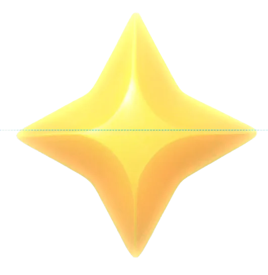

<!doctype html>
<html lang="en">

<head>
  <meta charset="UTF-8" />
  <meta name="viewport" content="width=device-width, initial-scale=1.0" />
  <link rel="icon" type="image/x-icon" href="/zero-full-flow/new-zero-logos/zero-monogram-greenish-256x256.ico" />

  <!--
    MUST MIRROR index.html:8-10. Two of the app's type families come from the
    Google Fonts CDN, not from public/fonts. Drop this and text metrics shift
    subtly everywhere — precisely the kind of near-miss this lab exists to
    eliminate.
  -->
  <link rel="preconnect" href="https://fonts.googleapis.com">
  <link rel="preconnect" href="https://fonts.gstatic.com" crossorigin>
  <link
    href="https://fonts.googleapis.com/css2?family=Faculty+Glyphic&family=Google+Sans+Flex:wght@100;200;300;400;500;600;700;800;900&display=swap"
    rel="stylesheet">

  <title>ZERO · Full Flow</title>
  <script type="module" crossorigin src="/zero-full-flow/assets/index-CgPHZokg.js"></script>
  <link rel="stylesheet" crossorigin href="/zero-full-flow/assets/index-DqMnQKtH.css">
  <link rel="preload" as="image" href="/zero-full-flow/zero-city-v4.webp" fetchpriority="high">
</head>

<body>
  <div id="root"></div>

  <!--
    index.html's boot-watchdog script is deliberately NOT copied here. It exists
    to recover an Electron renderer from ERR_NETWORK_CHANGED on a local server;
    on a static host it would fight normal loading.
  -->
<script id="zff-stitch">
/* zero-full-flow stitch: the scenario card's CTA launches the real
   stage workspace (approved presentation flow + coach layer) instead of
   the lab's embedded skin. Capture phase so it wins over the React handler. */
document.addEventListener('click', function (e) {
  var b = e.target && e.target.closest && e.target.closest('button');
  if (!b) return;
  /* keyed on the CTA itself, not on its wording: this matched the string
     "Continue" and would have come unhooked the moment the label changed. */
  if (b.matches('[data-cta="open"]') || b.textContent.trim() === 'Continue' || b.textContent.trim() === 'Start') {
    e.preventDefault(); e.stopPropagation();
    window.location.href = 'workspace.html';
  }
}, true);
</script>
<script src="flow-debug.js?v=6" defer></script>
<style id="zff-hud-scale">
/* The XP card (and the performance card beside it, same popover family) read
   oversized against the small HUD chips they hang from. Scale the whole card,
   type and all, rather than restyling type inside a bundle we do not own — the
   two are siblings, never nested, so one transform each and nothing compounds.
   Anchored top-right so it stays pinned under its chip as it shrinks. */
[class*="rounded-[32px]"][class*="backdrop-blur-xl"][class*="flex-col"]{
  transform:scale(.85);
  transform-origin:top right;
}
</style>
<style id="zff-journey-card">
/* ⚠️ THE RESET IS LOAD-BEARING, do not delete it as boilerplate.
     `.zc-row` is `width:100%` with `padding:0 22px`, and under the default
     content-box that resolves to card-width PLUS 44px — the meta VALUES were
     rendering 22px outside the card, past the right end of the divider
     (measured: rows 510px wide inside a 466px content box). The React card
     never showed this because Tailwind's preflight sets border-box globally,
     so the standalone copy has to state what the app inherits. */
  .zcard,.zcard *,.zcard *::before,.zcard *::after{box-sizing:border-box}

  /* ── fonts: bundled in fonts/ so this works offline, straight off disk ── */
  @font-face{font-family:'Google_Sans_Flex','Google Sans Flex';font-style:normal;font-weight:100 900;font-display:swap;
    src:url(fonts/GoogleSansFlex-VariableFont.ttf) format('truetype-variations')}
@font-face{font-family:'PPSupplyMono';font-style:normal;font-weight:400;font-display:swap;
    src:url(fonts/PPSupplyMono-Regular.otf) format('opentype')}
@font-face{font-family:'STK_Bureau_Serif','STK Bureau Serif';font-style:normal;font-weight:400;font-display:swap;
    src:url(fonts/STKBureau-SerifBook.otf) format('opentype')}

  .zcard{
    --card-w:100%;            /* the TRUE outer width now that box-sizing is
                                  border-box: 466 was measuring 522 on screen */
    --card-radius:44px;
    --card-pad:26px;
    --card-gap:24px;           /* the card's own vertical rhythm */
    --art-h:198px;             /* still the hero (was 108 before this round),
                                  trimmed with everything else */
    --title-size:31px;
    --row-gap:17px;            /* between meta rows */
    --green:rgb(73,186,97);
    --gold-bg:rgba(255,224,107,.12);
    --gold-ring:0 0 0 1px rgba(255,225,127,.4);
  }

  /* the page is only a stage for the card — the real host is the city map */
  /* the demo page's body rule is deliberately NOT copied: it is what put a
     black band above the app and shifted the whole map down. */
.stage{display:flex;flex-direction:column;align-items:center;gap:16px}

  /* ── THE CARD ──────────────────────────────────────────────────────────
     No border. A card is rgba(0,0,0,.5) + blur(16px) saturate(1.1); the 2px
     border and blur(10px) belong to a PILL. Mixing them was the first bug
     this kit was written to stop. */
  .zcard{
    position:relative;display:flex;width:var(--card-w);flex-direction:column;align-items:center;
    gap:var(--card-gap);overflow:hidden;border-radius:var(--card-radius);padding:var(--card-pad);
    background:rgba(0,0,0,.5);
    -webkit-backdrop-filter:blur(16px) saturate(1.1);backdrop-filter:blur(16px) saturate(1.1);
    box-shadow:0 44px 90px -24px rgba(0,0,0,.5);
    color:#fff;
  }
  /* ⚠️ never wrap this in a will-change/transform layer: any backdrop root
     above it blanks backdrop-filter and the glass goes flat. */

  /* ── header: pager arrows at the ENDS, company pill centred ── */
  .zc-head{display:flex;width:100%;align-items:center;justify-content:space-between}
.zc-arrow{position:relative;z-index:5;display:grid;place-items:center;width:36px;height:36px;flex-shrink:0;
    border:0;background:none;border-radius:9999px;color:rgba(255,255,255,.6);cursor:pointer;
    transition:background-color .15s,color .15s}
.zc-arrow:hover{background:rgba(255,255,255,.12);color:#fff}
.zc-arrow:disabled{pointer-events:none;opacity:.25}
.zc-copill{display:flex;height:38px;align-items:center;gap:9px;border-radius:9999px;padding:0 17px;
    background:rgba(255,255,255,.94);border:0;cursor:pointer;transition:opacity .15s}
.zc-copill:hover{opacity:.85}
.zc-copill img{width:20px;height:20px;object-fit:contain}
.zc-copill span{font-size:15px;font-weight:500;color:#1c1a18}
  /* locked: the company is dimmed, not hidden — the reveal is the reward */
  .locked .zc-copill{background:rgba(255,255,255,.55);filter:grayscale(1);opacity:.65}

  /* ── the hero: art, then the brief's NAME under it ──────────────────────
     min-height keeps every card one silhouette whether or not it has art, and
     the art is clamped in PIXELS. ⚠️ A percentage height computes to `auto`
     here (the flex area is indefinite) and the image renders at its intrinsic
     size — measured 188px inside a 96px box once. Pixels, always. */
  .zc-hero{display:flex;min-height:calc(var(--art-h) + 68px);width:100%;flex-direction:column;
    align-items:center;justify-content:center;gap:20px;padding:4px 0 2px}
.zc-art{width:auto;max-width:100%;max-height:var(--art-h);object-fit:contain;
    filter:drop-shadow(0 14px 26px rgba(0,0,0,.5))}
.locked .zc-art{filter:grayscale(1) opacity(.55)}
.zc-title{margin:0;padding:0 6px;text-align:center;font-size:var(--title-size);font-weight:500;
    line-height:1.18;letter-spacing:-.02em;color:rgba(255,255,255,.94);
    display:-webkit-box;-webkit-line-clamp:2;-webkit-box-orient:vertical;overflow:hidden}
  /* a scenario with NO art (the two training stops) sets its name in the serif
     at display size, so both card kinds keep one silhouette */
  .zc-title-serif{margin:0;text-align:center;font-family:'STK_Bureau_Serif','STK Bureau Serif',serif;font-size:62px;
    line-height:.95;letter-spacing:-.03em;color:rgba(255,255,255,.95)}

  /* ── meta block ── */
  .zc-meta-wrap{display:flex;width:100%;flex-direction:column;align-items:center;gap:var(--card-gap)}
.zc-divider{height:1px;width:100%;background:rgba(255,255,255,.12)}
.zc-meta{display:flex;width:100%;flex-direction:column;gap:var(--row-gap)}
.zc-row{display:flex;height:30px;width:100%;align-items:center;justify-content:space-between;padding:0 20px}
.zc-label{font-family:'PPSupplyMono',monospace;font-size:16px;text-transform:uppercase;
    color:rgba(255,255,255,.5);white-space:nowrap}
.zc-value{font-size:18px;font-weight:500;color:#fff}
.zc-value.band{color:var(--green)}
.zc-xp{display:inline-flex;align-items:center;gap:6px;border-radius:40px;padding:6px 11px;
    background:var(--gold-bg);box-shadow:var(--gold-ring)}
.zc-xp span{font-family:'PPSupplyMono',monospace;font-size:18px;letter-spacing:-1.62px;color:#fff9d5}

  /* ── the DIFFICULTY meter ───────────────────────────────────────────────
     Four lozenges, filled to the level, sitting between the label and the
     word. The word alone made Beginner and Advanced look like the same
     amount of information; the meter is what makes it a scale you can read
     without reading. It is the row's only graphic, so it stays monochrome —
     colour here would compete with the gold XP pill one row up. */
  .zc-diff{display:flex;align-items:center;gap:5px;margin-right:10px}
.zc-diff i{display:block;width:16px;height:9px;border-radius:9999px;background:rgba(255,255,255,.22)}
.zc-diff i.on{background:#fff}

  /* the green journey bar is GONE (2026-08-21): the card's job is this
     scenario, and a bar reading the whole journey's completion under one
     scenario's meta rows was answering a question nobody asked here. The
     journey's progress lives on the rail, which is where you go to see it. */

  /* ── the way in ── */
  .zc-cta{width:100%;padding-top:2px}
  /* locked: a FLAT plate, never a disabled start button — the 3D press and the
     shine both say "press me". And it names the next action, not the barrier. */
  .zc-locked-plate{display:flex;height:62px;width:100%;align-items:center;justify-content:center;gap:8px;
    border-radius:100px;padding:0 20px;background:rgba(255,255,255,.08)}
.zc-locked-plate span{text-align:center;font-size:15.5px;color:rgba(255,255,255,.55)}

  /* StartButtonV1, ported verbatim: white pill, tactile 3D press, three light
     lines sweeping across, holographic text as the shine passes over it */
  .sbtn{position:relative;display:flex;height:62px;width:100%;align-items:center;justify-content:center;
    gap:10px;overflow:hidden;border:0;outline:none;border-radius:100px;padding:15px 40px;cursor:pointer;
    user-select:none;
    background-image:linear-gradient(90deg,rgba(255,255,255,.4),rgba(255,255,255,.4)),
                     linear-gradient(180deg,rgba(229,229,229,.8),rgb(226,226,226));
    box-shadow:0 6px 0 #c8c8c8,0 12px 18px -6px rgba(0,0,0,.4),0 0 0 1.33px #e6e6e6,
               inset 0 1.33px 0 rgba(255,255,255,.75);
    transition:transform .1s cubic-bezier(.34,1.56,.64,1),box-shadow .1s}
.sbtn:hover{transform:translateY(-1px)}
.sbtn:active{transform:translateY(5px);
    box-shadow:0 1px 0 #c8c8c8,0 3px 8px -4px rgba(0,0,0,.4),0 0 0 1.33px #e6e6e6,
               inset 0 1.33px 0 rgba(255,255,255,.75)}
.sbtn > svg,.sbtn > .sbtn-label{position:relative;z-index:2}
.sbtn-label{font-weight:600;font-size:23px;letter-spacing:-.48px;
    background:linear-gradient(100deg,#121212 0%,#121212 34%,#ff5ec0 42%,#8b7bff 50%,#37dcc4 58%,#121212 66%,#121212 100%);
    background-size:300% 100%;-webkit-background-clip:text;background-clip:text;color:transparent;
    animation:sbtn-holotext 3s ease-in-out infinite}
.sbtn::after{content:'';position:absolute;inset:-25% 0;width:120%;z-index:1;pointer-events:none;
    background:linear-gradient(100deg,transparent 33%,rgba(255,255,255,.9) 38%,transparent 41%,
      transparent 46%,rgba(255,255,255,.9) 51%,transparent 54%,
      transparent 59%,rgba(255,255,255,.9) 64%,transparent 67%);
    transform:translateX(-100%) skewX(-14deg);animation:sbtn-shine 3s ease-in-out infinite}
.sbtn:hover::after{animation-duration:1s}

  /* ── the way back: a pill UNDER the card, outside it ───────────────────
     It replaced the ✕ (2026-08-21). The slot is always full, so there was
     never anything to dismiss — leaving a stop just returns you to the active
     one, and the control should say where it takes you. Only rendered when
     you are away from the active stop. */
  .zc-back{display:flex;height:44px;align-items:center;gap:8px;border-radius:9999px;padding:0 20px;
    border:0;cursor:pointer;font-family:inherit;font-size:15px;font-weight:500;
    color:rgba(255,255,255,.75);background:rgba(0,0,0,.5);
    -webkit-backdrop-filter:blur(16px) saturate(1.1);backdrop-filter:blur(16px) saturate(1.1);
    transition:color .15s}
.zc-back:hover{color:#fff}
@media (prefers-reduced-motion:reduce){
    .sbtn-label{animation:none;background:none;color:#121212}
.sbtn::after{animation:none;opacity:0}
  }

  /* page-only chrome, not part of the card */
  .switch{display:flex;gap:8px}
/* the bundle's own card contents stay in the DOM (the arrows live there) but out of sight */
.zcard .zc-orig{display:none!important}
.zcard .zc-body{display:contents}
</style>
<script id="zff-journey-card-js">
/* ── the journey card, as designed ────────────────────────────────────────
   The map's scenario card is rendered by the product bundle and carries the
   old meta (est. time, difficulty word, position in a list). This swaps in the
   journey card from the design port: the title art big, then what it PAYS,
   what it COSTS you and how HARD it is — reward first, because that is the
   reason to press the button.

   The bundle's shell is kept and restyled rather than replaced. That shell is
   what the map positions and what draws the leader line to the Netflix tower,
   so swapping the element would drop the anchor. Its own children are hidden,
   not removed, so the arrows keep working: ours forward their clicks to the
   real buttons underneath.

   React re-renders this card on every scenario change, which wipes our
   content — so the observer re-applies it, and a data flag stops it looping. */
(function () {
  var ART = 'assets/flight-mode-card.webp';
  var CARD = {
    company: 'Netflix',
    title: 'Deploy a recommendation prototype offline',
    xp: '750',
    time: '~1 hr',
    difficulty: 'Intermediate',
    dots: 3                                   /* of four */
  };
  /* the product's own XP star, the same asset the level chip up top uses —
     a hand-drawn four-point path next to it read as a different currency */
  var STAR = '';
  var CH = function (d) {
    return '<svg viewBox="0 0 24 24" width="17" height="17" fill="none" stroke="currentColor" ' +
      'stroke-width="2.4" stroke-linecap="round" stroke-linejoin="round" aria-hidden><path d="' + d + '"/></svg>';
  };

  function build(nf) {
    var dots = '';
    for (var i = 0; i < 4; i++) dots += '<i' + (i < CARD.dots ? ' class="on"' : '') + '></i>';
    return '<div class="zc-head">' +
        '<button class="zc-arrow" type="button" data-nav="prev" aria-label="Previous company">' + CH('M15 5l-7 7 7 7') + '</button>' +
        '<button class="zc-copill" type="button">' + (nf || '') + '<span>' + CARD.company + '</span></button>' +
        '<button class="zc-arrow" type="button" data-nav="next" aria-label="Next company">' + CH('M9 5l7 7-7 7') + '</button>' +
      '</div>' +
      '<div class="zc-hero">' +
        '' +
        '<p class="zc-title">' + CARD.title + '</p>' +
      '</div>' +
      '<div class="zc-meta-wrap"><div class="zc-divider"></div>' +
        '<div class="zc-meta" data-face="ahead">' +
          '<div class="zc-row"><span class="zc-label">Earn XP upto</span>' +
            '<span class="zc-xp">' + STAR + '<span>' + CARD.xp + '</span></span></div>' +
          '<div class="zc-row"><span class="zc-label">Time</span><span class="zc-value">' + CARD.time + '</span></div>' +
          '<div class="zc-row"><span class="zc-label">Difficulty</span>' +
            '<span class="zc-diff-wrap" style="display:flex;align-items:center">' +
              '<span class="zc-diff" aria-hidden>' + dots + '</span>' +
              '<span class="zc-value">' + CARD.difficulty + '</span></span></div>' +
        '</div>' +
      '</div>' +
      '<div class="zc-cta"><button class="sbtn" type="button" data-cta="open">' +
        '<svg width="17" height="17" viewBox="0 0 24 24" fill="#121212" aria-hidden><path d="M8 5v14l11-7z"/></svg>' +
        '<span class="sbtn-label">Start</span></button></div>';
  }

  function swap(card) {
    if (card.dataset.zcard === '1') return;
    /* the mark, shipped rather than scavenged: reading it back off the card
       picked up whichever <svg> came first, which was a chevron. */
    var markHtml = '';
    card.dataset.zcard = '1';
    card.classList.add('zcard');
    var kept = document.createElement('div');
    kept.className = 'zc-orig';
    while (card.firstChild) kept.appendChild(card.firstChild);
    card.appendChild(kept);
    var mine = document.createElement('div');
    mine.className = 'zc-body';
    mine.innerHTML = build(markHtml);
    card.appendChild(mine);
    /* the arrows are the bundle's to own — forward, never reimplement */
    mine.addEventListener('click', function (e) {
      var nav = e.target.closest && e.target.closest('[data-nav]');
      if (!nav) return;
      e.preventDefault();
      var want = nav.dataset.nav === 'prev' ? /previous scenario/i : /next scenario/i;
      var all = document.querySelectorAll('button[aria-label]');
      for (var i = 0; i < all.length; i++) {
        if (want.test(all[i].getAttribute('aria-label'))) { all[i].click(); return; }
      }
    });
  }

  function find() {
    return document.querySelector('div[role="dialog"][aria-label*="Netflix" i]')
        || document.querySelector('div[role="dialog"][aria-label*="Recommendation" i]');
  }
  function run() { var c = find(); if (c) swap(c); }
  run();
  new MutationObserver(run).observe(document.documentElement, { childList: true, subtree: true });
})();
</script>
</body>

</html>
